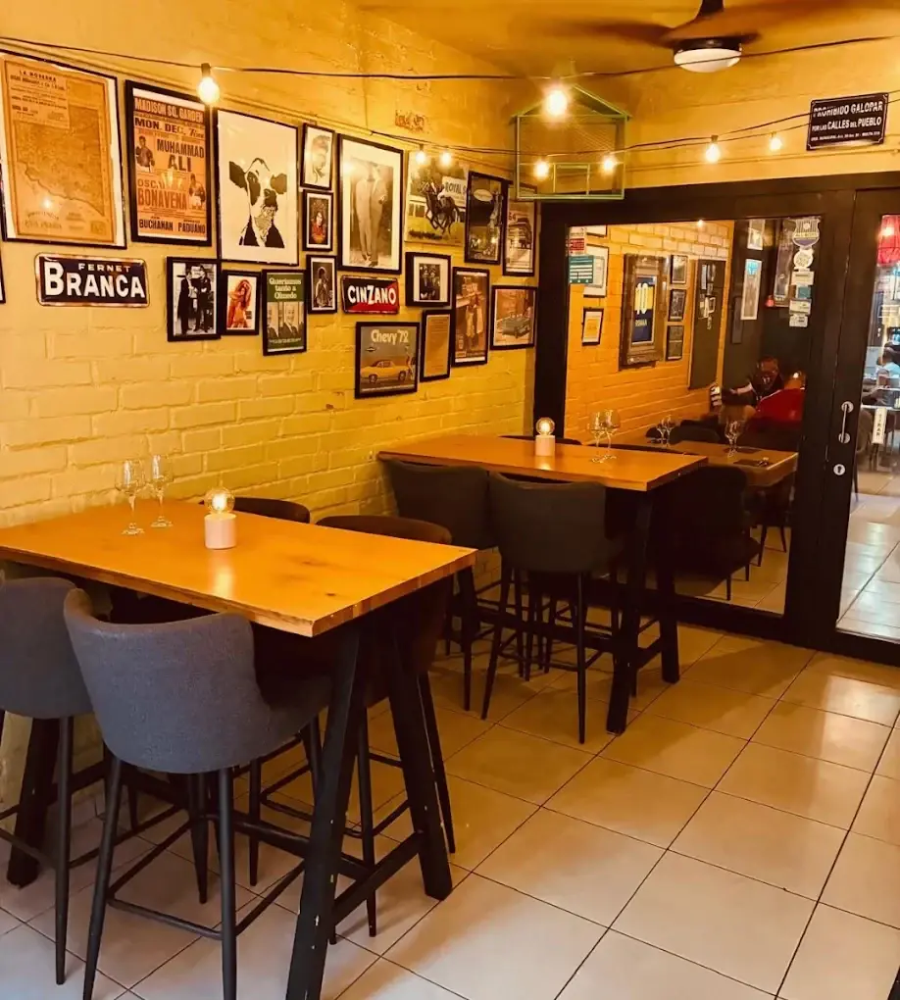
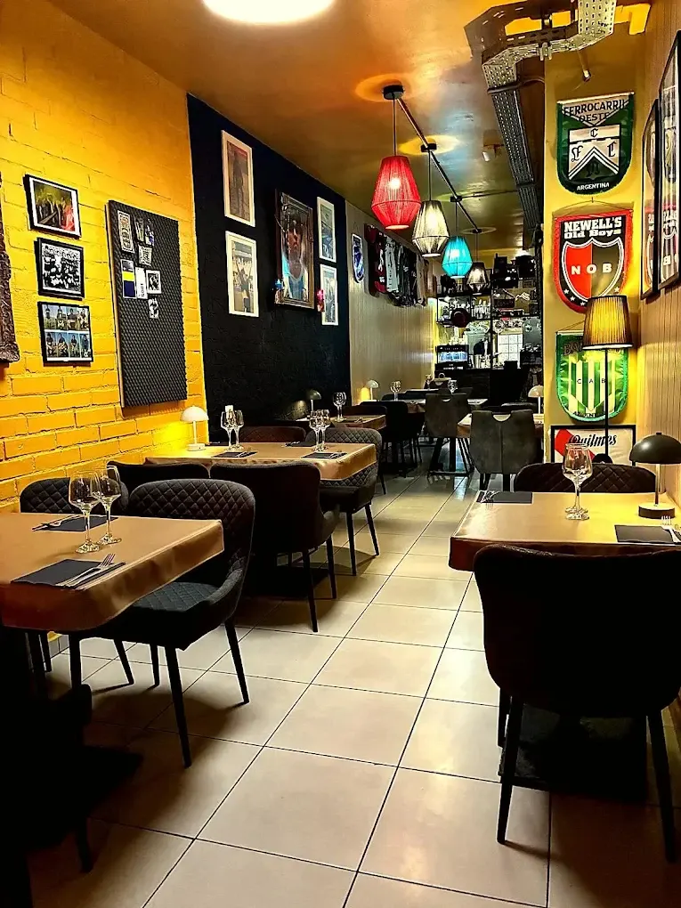
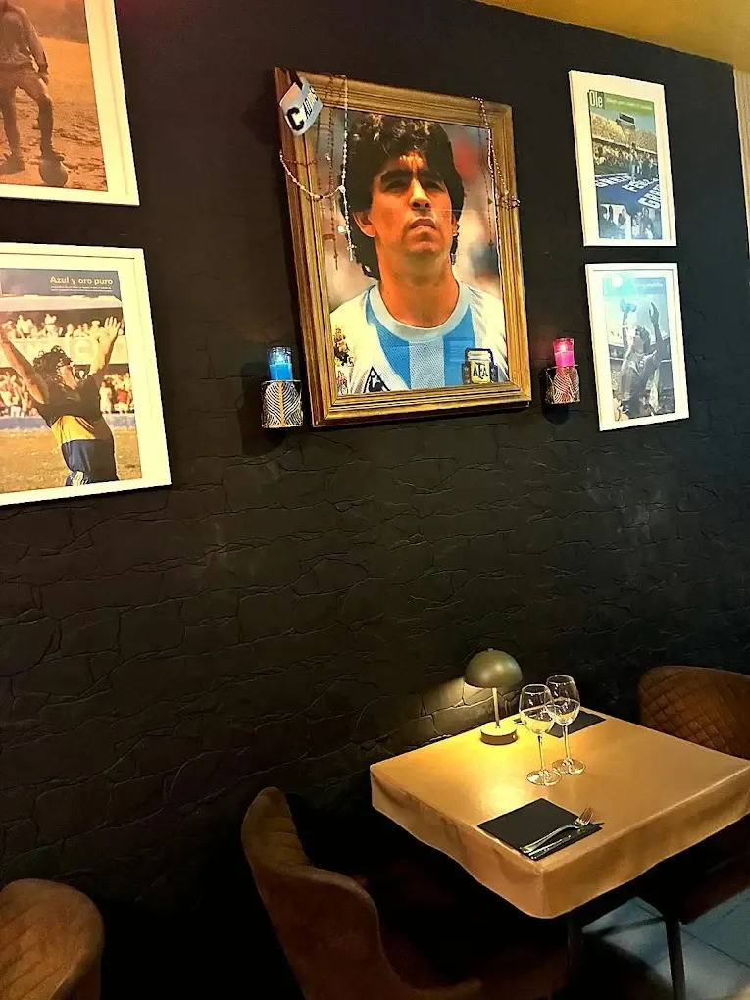
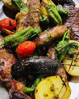
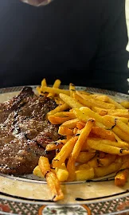

Bodegó argentí a Calafell
Brases, empanades i milaneses, amb taula parada i el cor obert.




La casa
Un racó de l'Argentina a Calafell
Viejas Locas és un bodegó argentí dels de tota la vida, a tocar de la platja. Parets plenes d'història, música de fons i una cuina feta com a casa: empanades casolanes, una bona colla de milaneses, talls de carn a la brasa i postres clàssiques.
Els valors de la casa són senzills: bon producte i bon tracte. Aquí es ve a menjar bé, compartir i gaudir com abans.
- Reserva en línia o per telèfon
- També per emportar i a domicili
- Obert de dimecres a dissabte

Carta
Les milaneses surten de titulars
Plats i preus de la carta que el restaurant té publicada. Poden haver canviat: confirma'ls al local.
Galeria
Brasa, empanades i samarretes


Vine a viure l'experiència argentina
Horari i ubicació
Vine a veure'ns
| Dilluns | Tancat |
|---|---|
| Dimarts | Tancat |
| Dimecres | 13–15 h · 20–23 h |
| Dijous | 13–15 h · 20–23 h |
| Divendres | 13–15 h · 20–23 h |
| Dissabte | 13–15 h · 20–23 h |
| Diumenge | Tancat |
43820 Calafell (Tarragona)
633 75 86 68 Instagram @viejaslocasbypampa Demana a domicili per Just Eat